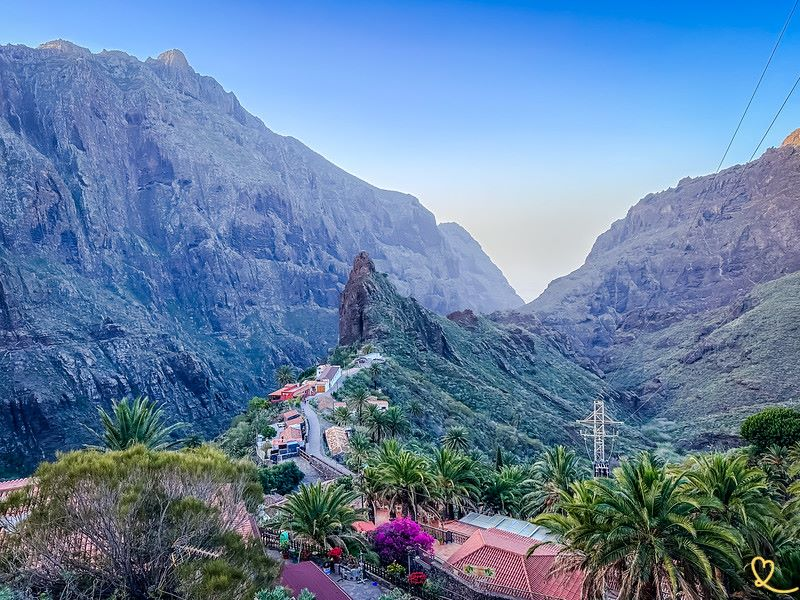
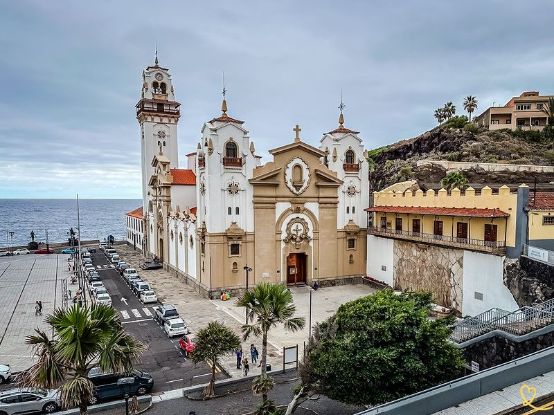

San Cristobal La Laguna
San Cristobal La Laguna, a UNESCO World Heritage site, is a town that impressed us deeply with its historic charm. Its wide cobbled streets and colorful colonial buildings bear witness to a rich past. We were transported back in time. The city is also home to numerous churches and convents, including the majestic Cathedral of Nuestra Señora de los Remedios.
La Orotava
La Orotava, nestled in a fertile valley, is an architectural gem, with houses featuring finely crafted wooden balconies that bear witness to a rich colonial past. The Casa de los Balcones is a remarkable example of traditional Canarian architecture. She charmed us. The town offers a mix of gardens, churches and historic buildings.

Masca
Now here’s a completely different experience. Masca is a tiny village perched in the Teno mountains. It’s the most picturesque in Tenerife. We were captivated by its spectacular location, nestled in a landscape of vertiginous gorges. In addition to the spectacular scenery, the traditional stone houses, clinging to the mountainside, are charming.
Puerto de la Cruz
Puerto de la Cruz, a historic seaside resort in northern Tenerife, harmoniously combines colonial charm with modern attractions. We were seduced by the relaxed atmosphere of its historic center and waterfront. Between gardens, churches, typical houses and street art, you can sit on the terraces of many cafés to enjoy this unique mix.

Candelaria
Candelaria, famous for its imposing basilica dedicated to the Virgin of Candelaria, patron saint of the Canary Islands, is an essential place of pilgrimage. It really is at the heart of the city and its culture. This oceanfront basilica is adorned with monumental statues representing the Guanche kings. We also particularly enjoyed the promenade along the waterfront, with its statues and black sandy beach.
Vilaflor
Vilaflor, in the hills above Tenerife, offers a magnificent natural setting. Surrounded by pine forests, it is the ideal starting point for numerous hikes in the Teide National Park. We were charmed by the peaceful atmosphere of its narrow streets. The 17th-century church of San Pedro is the historic heart of the village. And wine lovers will appreciate the surrounding vineyards.
Garachico
Garachico, the former capital of Tenerife, is a town that won us over with its historic charm and natural surroundings. It was rebuilt after a volcanic eruption in the 18th century. We loved the combination of the few historic buildings with the view of the cliffs and lava formations. By the sea, this creates natural pools.
Santa Cruz de Tenerife
Santa Cruz de Tenerife, the island’s capital, is a dynamic city offering a blend of modernity and tradition. From one neighborhood to the next, the experience varies greatly. We particularly enjoyed the Tenerife auditorium, designed by Santiago Calatrava. This architectural masterpiece dominates the waterfront.
Icod de los Vinos
Icod de los Vinos is famous for its thousand-year-old dragon tree. But it’s also a dynamic city with other tourist attractions, but full of locals. The historic heart of the town has well-preserved colonial buildings, and the park around the Drago Milenario offers an enchanting interlude.
Buenavista
Buenavista is a quiet little town with colorful houses and a pretty church. Above all, it is the gateway to the Punta de Teno volcanic zone at the foot of the giant cliffs. The combination of landscapes is magnificent.
Tenerife Carnival
Tenerife Carnival has three events that you really shouldn’t miss: the gala to select the Carnival Queen, where contestants compete in terms of glamour and imaginative costume to achieve a place of honour; the Cabalgata [Procession], in which the people take part in their finest costumes; and the Coso, the grand procession along the seafront, with carnival queens and their maids of honour, floats and music groups. A spectacular climax, and not to be missed if you want a great time.